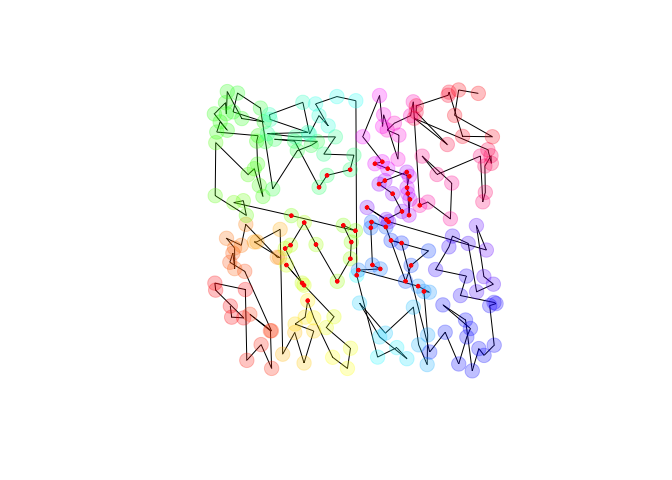

This package emerged from a fascination with spatial partitioning algorithms. I was curious if there was a simple and fast way to move multidimensional data elements near to each other in memory so that they could be retrieved quickly. I also admire the structure of the C++ standard library and was curious if the search functions for sorted sequences could be extended to higher dimensions. At the same time, I was interested to learn some of the newer feature of C++17.
The result is this package, which collects several ideas, including:
- A C++17 header file (
kdtools.h) that can be used separately from this package. It has multidimensional analogs to the C++ standard library functions for searching sorted lists (e.g., upper_bound, binary_search) but that operate on sequences of tuples rather than scalar values. It uses template metaprogramming to generate code for each dimension at compile time at the cost of some binary bloat. Sorting multidimensional arrays is fully threaded and very fast. It produces an implicit kd-tree split on medians that supports fast range queries and nearest-neighbor searches. - Along the way, I needed to manipulate tuple-like objects to, for example, compute the euclidean distance between fixed-length arrays. I was curious about variadic templates and wondered if I could figure out nested variadic templates. The result is the included
tuplemapr.hheader, which allows one to apply an arbitrary callable over the dimensions of a collection of tuple-like objects. It is entirelyconstexpr(except when calling certain standard library functions) and employs fold-expressions where convenient. - I generalized the code to work natively on data frames. This is slower, but still pretty fast (approx. 0.18 seconds to sort the nycflights13 flights data with 337k rows on an older macbook air). This code works on any R data type that supports comparison operators, including strings. Range and nearest-neighbors queries also support mixed types with different weights in each dimension.
- To support nearest-neighbor searches on strings, I coded a fast implementation of Levenshtein- or edit- distance. Allocating scratch space for the tableau is amortized constant. Most implementations allocate on every call, which is dramatically slower.
More details are here. Methods and benchmarks are here.
library(kdtools)
x = kd_sort(matrix(runif(400), 200))
plot(x, type = 'l', asp = 1, axes = FALSE, xlab = NA, ylab = NA)
points(x, pch = 19, col = rainbow(200, alpha = 0.25), cex = 2)
y = kd_range_query(x, c(1/4, 1/4), c(3/4, 3/4))
points(y, pch = 19, cex = 0.5, col = "red")
The following demonstrates a mixed-type range query on a data frame.
df <- kd_sort(data.frame(a = runif(12),
b = as.integer(rpois(12, 1)),
c = sample(month.name),
stringsAsFactors = FALSE))
print(df)
#> a b c
#> 8 0.01271206 0 July
#> 10 0.20984687 0 June
#> 3 0.12306503 1 September
#> 11 0.10688313 1 November
#> 6 0.30972967 2 February
#> 2 0.12909076 1 March
#> 5 0.38071652 0 May
#> 1 0.42951487 0 April
#> 9 0.87586080 1 December
#> 12 0.57758359 1 August
#> 7 0.54902204 2 January
#> 4 0.71089401 2 October
lower <- list(0.1, 1L, "August")
upper <- list(0.9, 4L, "September")
i <- kd_rq_indices(df, lower, upper)
print(i)
#> [1] 4 5 6 9 10 11 12
df[i, ]
#> a b c
#> 11 0.1068831 1 November
#> 6 0.3097297 2 February
#> 2 0.1290908 1 March
#> 9 0.8758608 1 December
#> 12 0.5775836 1 August
#> 7 0.5490220 2 January
#> 4 0.7108940 2 October